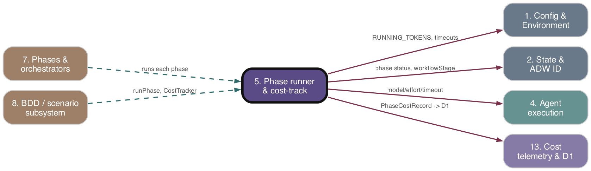

Subsystem 05 of 16
Phase runner & cost-tracking composition
As-is reference. Ground truth: source code.

Purpose
The composition glue that wraps each workflow phase: it routes a slash command to a model tier and reasoning effort, applies a per-phase watchdog timeout, runs a generic retry-with-resolution loop where applicable, and threads per-phase cost/model-usage back into running totals. The CostTracker + runPhase pair captures the bookkeeping every composite orchestrator would otherwise repeat after each phase, so orchestrators only list which phases to run. This subsystem owns the seam that captures cost from agent runs and commits it; it does not compute cost or talk to D1 internals (13. Cost telemetry & D1">subsystem 13).
Responsibilities
- Accumulate
costUsdandmodelUsageacross phases into running totals (CostTracker.accumulate). - Persist token counts to the orchestrator state file and optionally update the live running-token display (
CostTracker.persist). - Forward per-phase
PhaseCostRecord[]to D1, swallowing errors so cost failures never abort a workflow (CostTracker.commit). - Run a single phase (
runPhase) or a sequence/parallel set of phases (runPhasesSequential/runPhasesParallel), including skip-on-resume, per-phase status writes to top-level state, and rate-limit / timeout handling. - Route each slash command to a
ModelTierandReasoningEffort, with a cost-optimized "fast/cheap" variant selected by/fastor/cheapkeywords in the issue body (modelRouting.ts). - Resolve the per-phase agent watchdog timeout from env var, static map, or default (
agentTimeouts.ts). - Provide a reusable retry loop (
retryWithResolution) that runs an agent, extracts failures, resolves them, retries up tomaxRetries, and handles context-compaction resets separately (retryOrchestrator.ts).
Key Files
| Path | Role |
|---|---|
| --- | --- |
adws/core/phaseRunner.ts |
CostTracker class, runPhase/runPhasesSequential/runPhasesParallel, PhaseResult/PhaseFn types, completed-phase recording, rate-limit/timeout dispatch. |
| --- | --- |
adws/core/retryOrchestrator.ts |
Generic retryWithResolution loop, trackCost, RetryResult/RetryConfig/AgentRunResult types, context-reset handling. |
| --- | --- |
adws/core/modelRouting.ts |
Slash-command → model-tier and → reasoning-effort maps (default + fast), getModelForCommand/getEffortForCommand/isFastMode. |
| --- | --- |
adws/core/agentTimeouts.ts |
Per-phase watchdog timeout map and getAgentTimeoutForPhase. |
| --- | --- |
adws/core/orchestratorLib.ts |
Stage execution gating (shouldExecuteStage/getNextStage), uncommitted-change check, orchestrator-name↔script mapping. |
| --- | --- |
adws/core/__tests__/phaseRunner.test.ts |
Unit coverage for accumulation, skip-on-resume, status writes, rate-limit dispatch. |
| --- | --- |
adws/agents/commandAgent.ts |
Consumer: applies model/effort routing before invoking the agent. |
| --- | --- |
adws/agents/claudeAgent.ts |
Consumer: applies getAgentTimeoutForPhase watchdog, throws AgentTimeoutError/RateLimitError. |
Behavior & Flows
runPhase: (1) Skip-on-resume — ifphaseNameis set and the top-level state'sphases[phaseName]exists, its status is authoritative (completed⇒ skip returning a zeroPhaseResult;failed/running⇒ do NOT skip); if no phases-map entry exists, fall back to the legacyconfig.completedPhasesstring array. (2) Write{status:'running', startedAt}andworkflowStage='<phase>_running'to top-level state. (3) Run the phase fn; on successaccumulate→persist→commit, then writecompletedstatus andrecordCompletedPhase(appends tometadata.completedPhaseswithout clobbering). (4) On error: writefailedstatus; ifAgentTimeoutError(also recordsfailureReason:'agent_timeout'and lazily callshandlePhaseTimeout); ifRateLimitError, lazily callhandleRateLimitPause(config, phaseName, 'rate_limited', totalCostUsd, totalModelUsage); always re-throw.runPhasesParallel: runs fns concurrently viaPromise.all, merges cost/usage/records in one shot, then a singleaccumulate/persist/commit. Does not write per-phase status (nophaseName).- Cost capture seam: each phase fn returns
{costUsd, modelUsage, phaseCostRecords?}derived from the agent'sAgentResult.totalCostUsd/modelUsage(built by phases viacreatePhaseCostRecords).CostTracker.commitposts records to D1 viapostCostRecordsToD1, derivingprojectfromconfig.targetRepo?.repo ?? config.repoContext?.repoId.repo ?? 'unknown'andrepoUrlfromGITHUB_REPO_URL; errors are logged and swallowed. - Model/effort routing:
commandAgent.runCommandAgentcallsgetModelForCommand/getEffortForCommandwithissueBody.isFastMode(regex/fast\b|/cheap\b) picks*_FASTmaps. Haiku commands carryundefinedeffort (no--effortflag). - Timeout watchdog:
claudeAgent.runClaudeAgentWithCommandresolvesgetAgentTimeoutForPhase(phaseName)(envAGENT_PHASE_TIMEOUT_<PHASE>→AGENT_PHASE_TIMEOUT_MAP→AGENT_DEFAULT_TIMEOUT_MS, default 1,800,000 ms). AsetTimeoutwatchdog kills the process group and awatchdogFiredguard throwsAgentTimeoutError; the same setup is mirrored on the ENOENT retry path. - Generic retry:
retryWithResolutionloops up tomaxRetries: run →trackCost→ if compaction detected, increment a separatecontextResetCount(capped atmaxContextResets/MAX_CONTEXT_RESETS, throws when exceeded) andcontinuewithout incrementing the retry count; on agent failure increment retry; on pass return; otherwiseextractFailures,resolveFailures,trackCostagain, repeat. Each attempt appends to agent state log.
Data Structures
PhaseResult { costUsd: number; modelUsage: ModelUsageMap; phaseCostRecords?: PhaseCostRecord[] }— return contract every phase fn satisfies.PhaseFn = (config: WorkflowConfig) => Promise<PhaseResult>.CostTracker(private_totalCostUsd,_totalModelUsage; getters;accumulate/persist/commit).RetryResult<TFailure> { passed; costUsd; totalRetries; failures; modelUsage; contextResetCount }.RetryConfig<TRunResult, TFailure>{maxRetries,statePath,label,run,isPassed,extractFailures,resolveFailures, optionalonRetryFailed/onCompactionDetected/maxContextResets}.AgentRunResult { success; totalCostUsd?; modelUsage?; compactionDetected? }.- Routing maps:
SLASH_COMMAND_MODEL_MAP(_FAST),SLASH_COMMAND_EFFORT_MAP(_FAST);ModelTier='opus'|'sonnet'|'haiku',ReasoningEffort='low'|'medium'|'high'|'xhigh'|'max'. AGENT_PHASE_TIMEOUT_MAP: Record<string, number>(seeded with'step-def').
Public Interface
class CostTracker—totalCostUsd,totalModelUsage,accumulate(result),persist(config),commit(config, records).runPhase(config, tracker, fn, phaseName?),runPhasesSequential(config, tracker, fns),runPhasesParallel(config, tracker, fns).retryWithResolution(config),trackCost(result, state, statePath),initAgentState(statePath, agentName).getModelForCommand(command, issueBody?),getEffortForCommand(command, issueBody?),isFastMode(issueBody?).getAgentTimeoutForPhase(phaseName?); re-exportedAGENT_DEFAULT_TIMEOUT_MS,AGENT_PHASE_TIMEOUT_MAP.shouldExecuteStage,getNextStage,hasUncommittedChanges,deriveOrchestratorScript,orchestratorNamesForScript.- All of the above are re-exported through
adws/core/index.ts.
Dependencies
- Upstream (depends on):
- 02. State & ADW ID">Subsystem 2 (State & ADW ID) —
AgentStateManagerfor top-level/orchestrator state read/write,config.adwId. - 13. Cost telemetry & D1">Subsystem 13 (Cost telemetry & D1) —
mergeModelUsageMaps,persistTokenCounts,computeDisplayTokens,createPhaseCostRecords,postCostRecordsToD1,PhaseCostRecord/ModelUsageMaptypes. - 01. Config & Environment">Subsystem 1 (Config & Environment) —
RUNNING_TOKENS,MAX_CONTEXT_RESETS,AGENT_DEFAULT_TIMEOUT_MS, env overrides. - 07. Phases & orchestrators">Subsystem 7 (Phases & orchestrators) —
WorkflowConfigtype (adws/phases/workflowInit); lazy importshandleRateLimitPause/handlePhaseTimeoutfromworkflowCompletion(lazy to avoid circular deps). RateLimitError/AgentTimeoutErrorfromtypes/agentTypes.- Downstream (depended on by):
- 07. Phases & orchestrators">Subsystem 7 (Phases & orchestrators) — every composite orchestrator (
adwSdlc,adwBuild,adwPlan, etc.) wraps phases inrunPhase/CostTracker. - 04. Agent execution">Subsystem 4 (Agent execution) —
commandAgent/claudeAgentconsume model/effort routing and per-phase timeouts. - 08. BDD / scenario subsystem">Subsystem 8 (BDD/scenario) — test/scenario retry loops use
retryWithResolution.
Interactions
| Other subsystem | Direction | What is exchanged |
|---|---|---|
| --- | --- | --- |
| 4. Agent execution | → (out) | Supplies model tier, reasoning effort, and per-phase watchdog timeout to the agent runner; receives AgentResult (cost/model usage) and AgentTimeoutError/RateLimitError. |
| --- | --- | --- |
| 7. Phases & orchestrators | ↔ | Receives PhaseFns and WorkflowConfig; returns PhaseResult; lazily invokes handleRateLimitPause/handlePhaseTimeout. |
| --- | --- | --- |
| 13. Cost telemetry & D1 | → (out) | Merges/persists token counts; posts PhaseCostRecord[] via postCostRecordsToD1 (errors swallowed). |
| --- | --- | --- |
| 2. State & ADW ID | ↔ | Reads/writes top-level phase status (running/completed/failed), workflowStage, and metadata.completedPhases; reads adwId. |
| --- | --- | --- |
| 1. Config & Environment | → (in) | RUNNING_TOKENS, MAX_CONTEXT_RESETS, timeout defaults, GITHUB_REPO_URL. |
| --- | --- | --- |
| 8. BDD / scenario subsystem | → (out) | retryWithResolution drives test/scenario fix-retry loops. |
PRD Divergences
- The orienting PRD (
specs/prd/d1-cost-database.md) describes cost capture as POSTingPhaseCostRecord[]to a Worker from "phase cost commit logic". As-is, that commit point isCostTracker.commitcallingpostCostRecordsToD1, matching the PRD's intent. No divergence observed within this subsystem's scope (cost computation, snake_case transform, and CSV-removal details belong to 13. Cost telemetry & D1">subsystem 13).